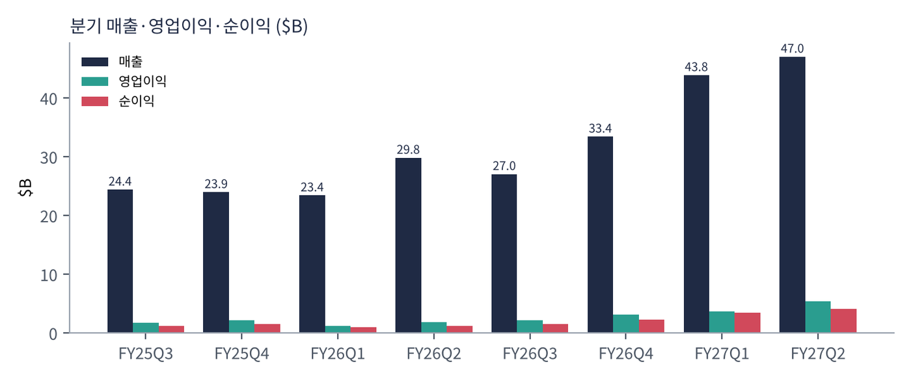
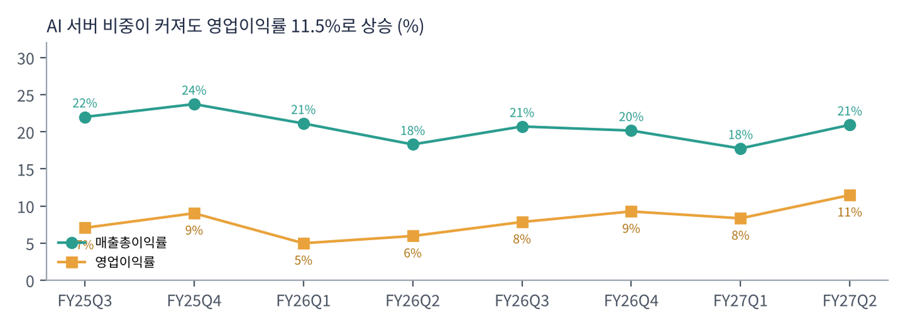
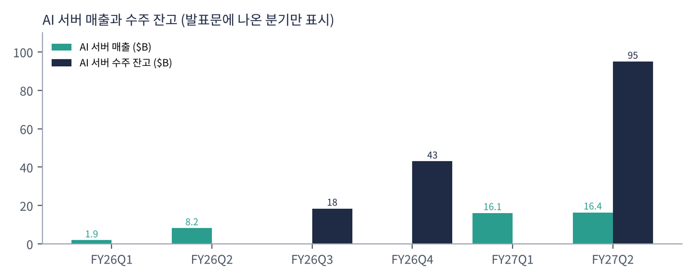
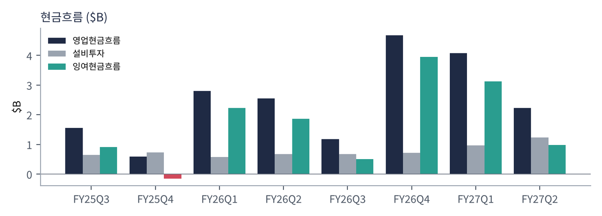
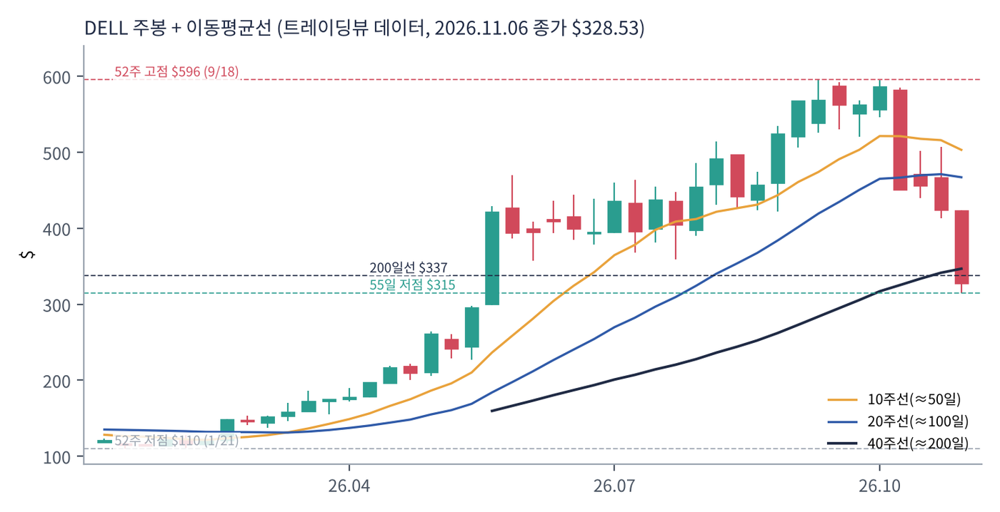
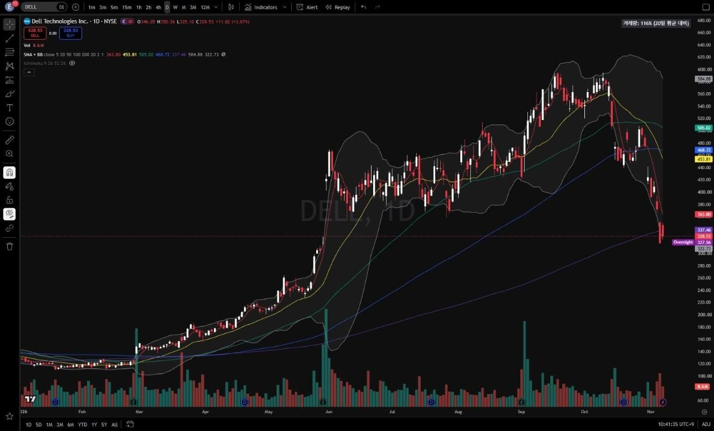

델은 PC(노트북·데스크톱)와 서버·스토리지를 파는 세계 최대 IT 하드웨어 회사 중 하나다. 2024년까지는 'PC 회사'로 평가받았지만, 엔비디아 GPU를 탑재한 AI 서버를 일론 머스크의 xAI, 코어위브 같은 네오클라우드, 각국 정부·대기업에 대량 공급하면서 AI 인프라 핵심 기업이 됐다. 창업자 마이클 델이 회장 겸 CEO다.
| 항목 | 내용 |
|---|---|
| 종목 | Dell Technologies Inc. (DELL) · IT 하드웨어 · 1984년 설립 · 본사 텍사스주 라운드록 |
| 경영진 | 마이클 델 회장 겸 CEO / 제프 클라크 부회장 겸 COO / 데이비드 케네디 CFO |
| 시가총액 | 약 $2,089억 · PER 22.8배 (트레이딩뷰, 11/6 종가 기준) |
| 최근 분기(2Q FY27) | 매출 $469.7억, 영업이익 $53.9억, 순이익 $41.3억 |
| 배당 | 분기 $0.63, 배당수익률 약 0.7% |
| 분기(회계) | 매출 | 매출총이익률 | 영업이익 | 이익률 | 순이익 | 영업현금 | 특이 사항 |
|---|---|---|---|---|---|---|---|
| FY25 3Q | $243.7억 | 22.0% | $17.2억 | 7.1% | $11.8억 | $15.5억 | |
| FY25 4Q | $239.3억 | 23.7% | $21.6억 | 9.0% | $15.3억 | $5.9억 | |
| FY26 1Q | $233.8억 | 21.1% | $11.7억 | 5.0% | $9.7억 | $28.0억 | AI 서버 $19억 |
| FY26 2Q | $297.8억 | 18.3% | $17.7억 | 6.0% | $11.6억 | $25.4억 | AI 서버 $82억 |
| FY26 3Q | $270.1억 | 20.7% | $21.2억 | 7.8% | $15.5억 | $11.7억 | 잔고 $184억 |
| FY26 4Q | $333.8억 | 20.2% | $30.9억 | 9.3% | $22.6억 | $46.7억 | 잔고 $430억 |
| FY27 1Q | $438.4억 | 17.7% | $36.6억 | 8.3% | $34.4억 | $40.8억 | AI 서버 $161억 |
| FY27 2Q | $469.7억 | 20.9% | $53.9억 | 11.5% | $41.3억 | $22.3억 | 잔고 $950억 |

분기 매출이 1년 전 $298억에서 $470억으로 58% 늘었다. 늘어난 $172억 중 AI 서버가 $82억, 일반 서버·네트워크가 $58억, PC가 $25억, 스토리지가 $10억이다. AI만이 아니라 일반 서버(+122%)까지 함께 늘었다는 점이 중요하다. AI 학습·추론 옆에서 데이터를 처리할 일반 서버와 스토리지 수요가 같이 커지고 있다.

AI 서버는 이익률이 낮다는 통념이 깨지고 있다. GPU 서버는 엔비디아 칩 원가가 커서 매출총이익률이 낮다. 실제로 매출총이익률은 22~24%에서 18~21%로 내려왔다. 그런데 매출 규모가 커지면서 영업이익률은 오히려 5~9%에서 11.5%로 올라갔다. 인프라 사업부(ISG) 영업이익률은 15%(1년 전 8.8%)다.


영업현금흐름은 분기마다 크게 출렁인다. AI 서버는 부품(GPU)을 먼저 사고 고객이 나중에 돈을 내는 구조라 재고·매출채권이 늘어나는 분기에는 현금이 줄어든다. 2분기 영업현금은 $22억이었지만 회사가 계산한 조정 잉여현금흐름은 $81억이었다.
| 항목 | 3Q FY27 | FY27 (기존 → 수정) |
|---|---|---|
| 매출 | $490억 (+81%) | $1,670억 → $1,920억 (+69%) |
| AI 서버 매출 | $600억 → $740억 (+200%) | |
| GAAP EPS | $6.10 (+168%) | $17.31 → $24.37 |
| 비GAAP EPS | $6.50 (+151%) | $17.90 → $25.50 (+148%) |
트레이딩뷰 DELL 일봉 300개(2025.8 ~ 2026.11.6)와 주봉으로 계산했다. 결론부터 말하면 1년 동안 $110 → $596(5.4배)으로 오른 뒤 7주 만에 45% 빠졌다. 6개월·12개월 수익률은 아직 플러스라 장기 추세는 살아 있지만, 단기 추세는 무너졌다.


위: 주봉 재구성 차트. 아래: 트레이딩뷰 일봉 캡처(작도 없이 이동평균선·볼린저밴드만 표시).
| 이동평균 | 값 | 종가 대비 | 해석 |
|---|---|---|---|
| 5일선 | $363.8 | -9.7% | 11월 첫 주 급락 |
| 20일선 | $453.8 | -27.6% | |
| 50일선 | $505.0 | -34.9% | 9~10월 고점권 |
| 100일선 | $468.7 | -29.9% | |
| 200일선 | $337.5 | -2.6% | 11/6 이탈 — 장기 추세의 마지막 선 |
주봉 흐름: 2025년 $120~167 → 2026년 1월 $110 연저점 → 2월 말 4Q 실적(+21% 주간) → 3~5월 $150 → $298 → 5월 말 1Q 실적 주 +43%($300 → $421) → 6~8월 $360~490 → 9/1 2Q 실적 후 $567~596 → 10월 둘째 주 -22%($582 → $452), 11월 첫 주 -22%, 장중 $315 → $328.5 마감.
| 규칙 | 기준 | 현재 값 | 신호 |
|---|---|---|---|
| 장기 추세 필터 | 종가 vs 200일선 | $328.5 < $337.5 | 매도 |
| 중장기 교차 | 50일선 vs 200일선 | $505.0 > $337.5 | 매수 |
| 단기 교차 | 20일선 vs 50일선 | $453.8 < $505.0 | 매도 |
| 돈키언 채널 | 55일 고가 $595.5 / 저가 $315.0 | 중간값 $455.3 아래 | 매도 |
| 1개월 모멘텀 | 21거래일 수익률 | -42.8% (기준 $574.6) | 매도 |
| 3개월 모멘텀 | 63거래일 수익률 | -28.2% (기준 $457.9) | 매도 |
| 6개월 모멘텀 | 126거래일 수익률 | +26.1% (기준 $260.5) | 매수 |
| 12개월 모멘텀 | 252거래일 수익률 | +115.6% (기준 $152.4) | 매수 |
| 종합 (8개 평균) | -0.25 | 중립 약세 | |
해석: 장기 신호 3개(50/200 교차, 6·12개월)가 매수로 버티고 있어 점수가 -0.25에 그친다. 그러나 6개월 기준가가 5월 급등 구간($300~420)으로 올라가는 12월 이후에는 매도로 바뀌기 쉽다. 14일 ATR $34(10.5%)는 하루 ±10%가 흔하다는 뜻이다.
| 가격 | 무엇이 바뀌나 | 의미 |
|---|---|---|
| $337.5 | 200일선 회복 | 점수 0으로 상승 |
| $454 ~ 458 | 20일선, 돈키언 중간값, 3개월 기준 | 3개 신호 매수 전환 → 점수 +0.75 가능 |
| $315 이탈 | 55일 저점 붕괴 | 5월 갭($300) 메우기 |
| 구분 | 가격대 | 근거 |
|---|---|---|
| 저항 2 | $420 ~ 455 | 5월 말 갭 상단, 20일선 |
| 저항 1 | $360 ~ 365 | 5일선, 11월 첫 주 시가권 |
| 지지 1 | $300 ~ 337 | 5월 말 갭 하단($300), 55일 저점($315), 200일선 |
| 지지 2 | $260 ~ 298 | 5월 중순 박스, 6개월 기준가 |
기본 판단: 숫자는 최고, 주가는 'AI 설비투자 정점' 우려를 반영 중. FY27 비GAAP EPS 가이던스 $25.50 기준 현재가는 약 13배다. 숫자만 보면 싸다. 그러나 시장은 지금의 AI 서버 주문이 고객들의 자금 조달(오라클·코어위브 같은 고객의 부채)에 기대고 있다는 점, 그리고 2027년에도 지속될지를 의심하고 있다. 잔고 $950억이 실제 매출로 바뀌는지가 핵심이다.
| 가격대 | 시나리오 | 대응 |
|---|---|---|
| $455 이상 | 추세 회복 | 2차 익절 |
| $337 ~ 365 | 200일선 회복 | 1차 익절 또는 추가 |
| $300 ~ 330 | 장기 지지 | 분할 매수 80% |
| $285 이하 종가 | 지지 붕괴 | 손절 |
| 사업 | 돈을 버는 방식 | 2Q FY27 | 성장 |
|---|---|---|---|
| AI 최적화 서버 (ISG) | 엔비디아 GPU를 탑재한 랙 단위 서버·냉각·설치 서비스. 네오클라우드·정부·대기업 | $164.0억 | +100% |
| 일반 서버·네트워크 (ISG) | 파워엣지 서버, 네트워크 장비 | $105.3억 | +122% |
| 스토리지 (ISG) | 파워스토어·파워스케일 등 데이터 저장 장비 | $48.5억 | +26% |
| 상업용 PC (CSG) | 기업용 노트북·데스크톱(AI PC 교체 수요) | $131.9억 | +22% |
| 소비자 PC (CSG) | 개인용 PC | $18.4억 | +7% |
델의 매출 중심은 1년 만에 PC에서 서버로 넘어갔다. 1년 전 인프라(ISG)와 PC(CSG) 매출은 $168억 대 $125억이었지만 지금은 $318억 대 $150억이다. 영업이익 비중은 ISG 81%, CSG 19%다. PC도 +20%로 좋은데, AI PC로의 교체 수요와 윈도우 지원 종료 효과로 보인다.
클라크 부회장의 메시지다. "IT 환경이 비용 센터에서 성장과 경쟁 우위를 만드는 가치 동력으로 바뀌었고, 고객은 그에 맞게 투자하고 있다."
| 축 | 내용 |
|---|---|
| AI 팩토리 | GPU 서버·스토리지·네트워크·냉각·설치까지 한 번에 공급. 엔비디아와 함께 '델 AI 팩토리' 브랜드 |
| 고객 다변화 | 네오클라우드 → 소버린(국가) AI → 대기업 자체 데이터센터. 잔고의 파이프라인은 그 몇 배라고 회사 설명(3Q FY26) |
| 규모의 경제 | 공급망·서비스 인력·금융(델 파이낸셜)으로 대형 주문을 빠르게 납품 |
| 주주환원 | 분기 $43억 자사주·배당. 이익 증가를 주주에게 돌려줌 |
| 분기 | 회사의 말 | 읽는 법 |
|---|---|---|
| 3Q FY26 | 잔고 $184억, "5분기 파이프라인은 잔고의 몇 배, 네오클라우드·소버린·기업 고객 혼합" | 수요 확대 초기 |
| 4Q FY26 | "연중 $250억 이상의 주문", 사상 최대 잔고 $430억으로 FY27 진입 | 가속 |
| 2Q FY27 | AI 주문 $609억, 매출 $164억, 잔고 $950억 모두 사상 최대. "AI 모멘텀이 가속하고 기회가 포트폴리오 전반으로 확대." 연간 매출 전망 $250억 상향 | 정점이 아니라 가속이라는 주장 |
경영진의 메시지는 한결같이 '가속'이다. 그러나 주가는 정반대로 움직였다. 시장이 보는 것은 델의 수요가 아니라 델 고객의 지불 능력이다. AI 서버를 사는 네오클라우드(코어위브·네비우스 등)와 오라클의 주가가 10월 이후 함께 급락한 것이 델에도 그대로 반영됐다.
영업이익 $47.8억(+225%), 이익률 15.0%. AI 서버 뿐 아니라 일반 서버(+122%)와 스토리지(+26%)까지 사상 최대.
영업이익 $11.4억(+42%), 이익률 7.6%. 상업용 PC가 사상 최대. 메모리 가격 급등은 PC 원가 부담 요인이다.
FY27 AI 서버 가이던스 $740억 중 상반기 $325억을 이미 냈으니 하반기 $415억이 남았다. 잔고로 충분히 덮인다.
2분기 $43억, 상반기 이익의 상당 부분을 자사주 매입에 썼다. 주가 급락 구간에서 매입이 계속되는지 확인이 필요하다.
| 경쟁/리스크 | 내용 | 강도 |
|---|---|---|
| 고객 신용 | 네오클라우드·AI 스타트업 고객이 부채로 서버를 사는 구조. 고객의 자금 조달이 막히면 주문 취소·연기 | 높음 |
| 경쟁 | 슈퍼마이크로, HPE, 레노버, 대만 ODM(폭스콘·콴타)과 가격 경쟁 | 중간 |
| 원가 | GPU·메모리 원가 상승, 공급 부족 시 납품 지연 | 중간 |
| 엔비디아 의존 | AI 서버 매출 대부분이 엔비디아 GPU. 배정 물량이 성장 속도를 결정 | 중간 |
| 현금흐름 변동 | 대형 주문으로 운전자본 부담이 분기마다 크게 변동 | 참고 |
11월 말 3Q 실적에서 매출 $490억, 잔고 유지, FY28 전망이 핵심이다. 실적이 좋아도 'AI 정점' 우려가 이어지면 주가 반응은 제한될 수 있다.
기업·국가의 자체 AI 데이터센터 구축이 본격화되면 델은 가장 큰 수혜주 중 하나다. 반대로 AI 투자가 꺾이면 서버 매출이 빠르게 줄어드는 경기민감주로 돌아간다.